CAD模型(part-level)转换为URDF格式
所需软件
-
Unity 2020.1.0f1c1（也可以使用低一点的Unity版本，但是流程未经验证，推荐使用该版本）
-
下载链接 https://unity.cn/releases 建议从Unity Hub下载安装。
-
Unity入门视频教程 https://www.bilibili.com/video/BV1B7411L74W 只需要看[P1, P3, P13]，了解最基本的编辑器操作即可。
-
使用ROS #插件创建和导出URDF视频教程（作为参考）https://youtu.be/07q2mGxD2j8
-
-
Blender 2.80 （建议使用该版本）
详细步骤
准备工作
-
创建新项目（不同的物体可以共用一个项目，只要创建一次项目就可以）。（注意Unity可能每天都要手动激活一次）选择3D项目，如下图所示：
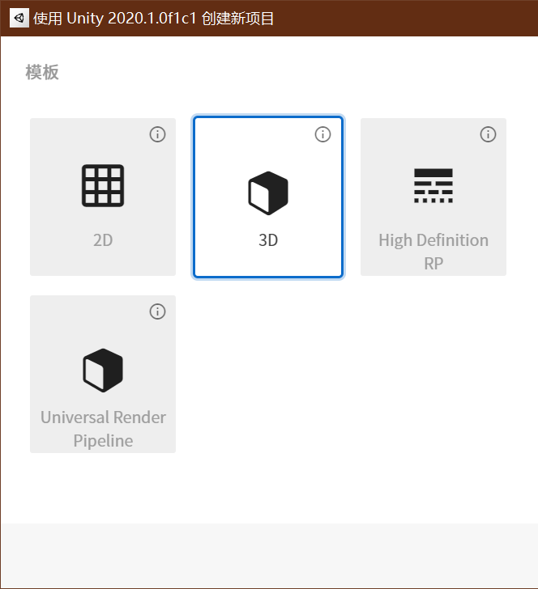
-
将ROS#插件添加到Unity的资源中。
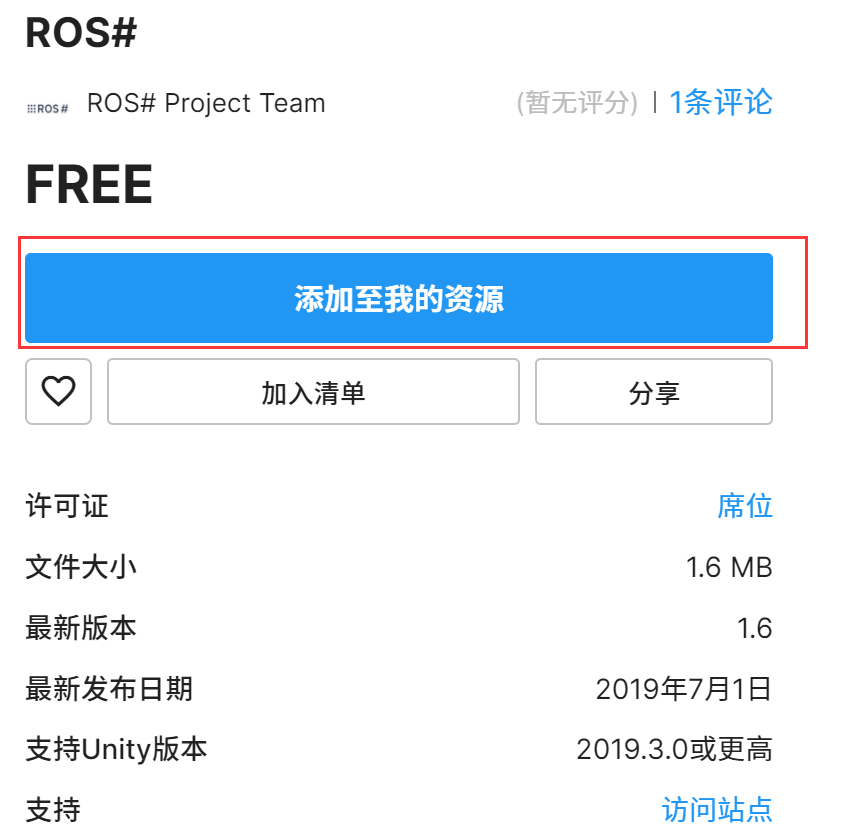
在Unity的Package Manager中找到ROS#插件，选择Import（若第一次使用需点击Download）。
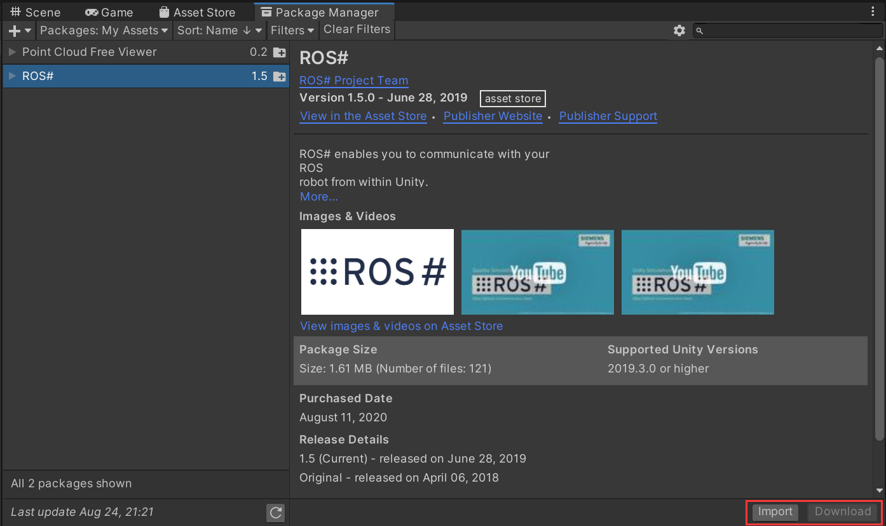
在弹出的窗口中继续点击Import，导入所有代码。

转换面片模型(.obj -> .fbx)
-
打开Blender，鼠标左键选择默认的Collection，鼠标右键选择Delete Hierarchy，把系统默认自带的物体都删除。
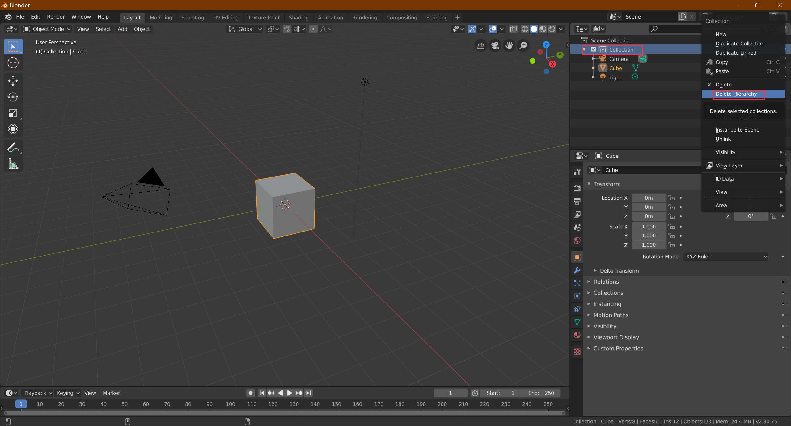
-
在File菜单中选择Import->Wavefront(.obj)，并选择想要导入的文件。
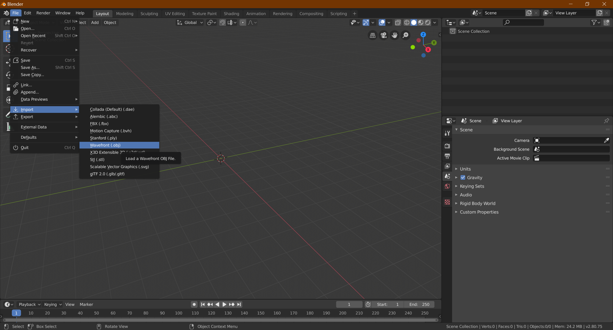
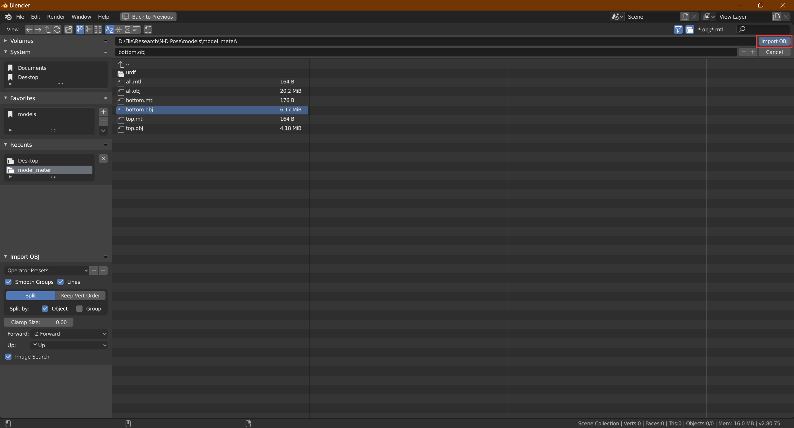
-
导入之后可以使用鼠标滚轮放缩物体，此时我们可以看到物体还没有纹理，按下Z选择Rendered模式显示纹理。在右侧的材质选项中还可以调节具体参数（可选）。如下图所示：
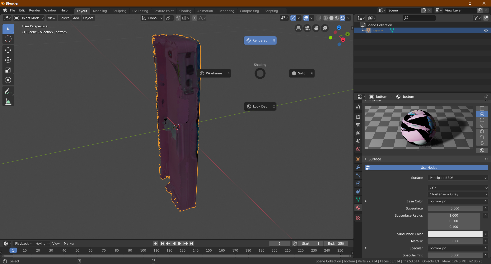
-
更改物体名字和material名字，如下图所示：
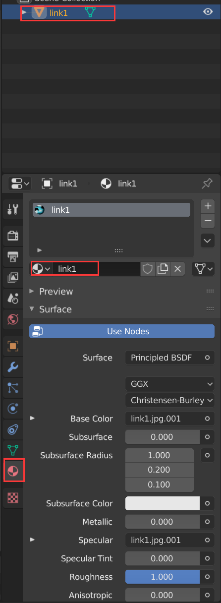
-
在右侧选中该物体，选择File->Export->FBX(.fbx)

建议只选中左下角的Mesh，选择FBX Units Scale，同时选择Selected Objects，然后点击右上角的Export FBX。

创建URDF模型
-
使用Unity导入目标物体各个part的CAD模型(.obj, .mtl, .jpg)，放到assets/cad_assets管理器中（建议新建一个Models文件夹，放在里面）。以下用一个可以旋转的快递盒子作为示例（分为两个部分，底部bottom和顶部up），如下图所示：
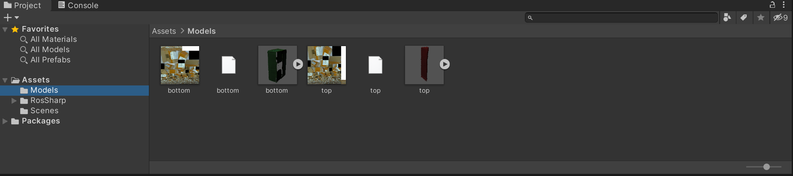
-
在Hierarchy界面中点击鼠标右键，选择3D Object->URDF Model(new)。创建一个新的空白URDF Model。
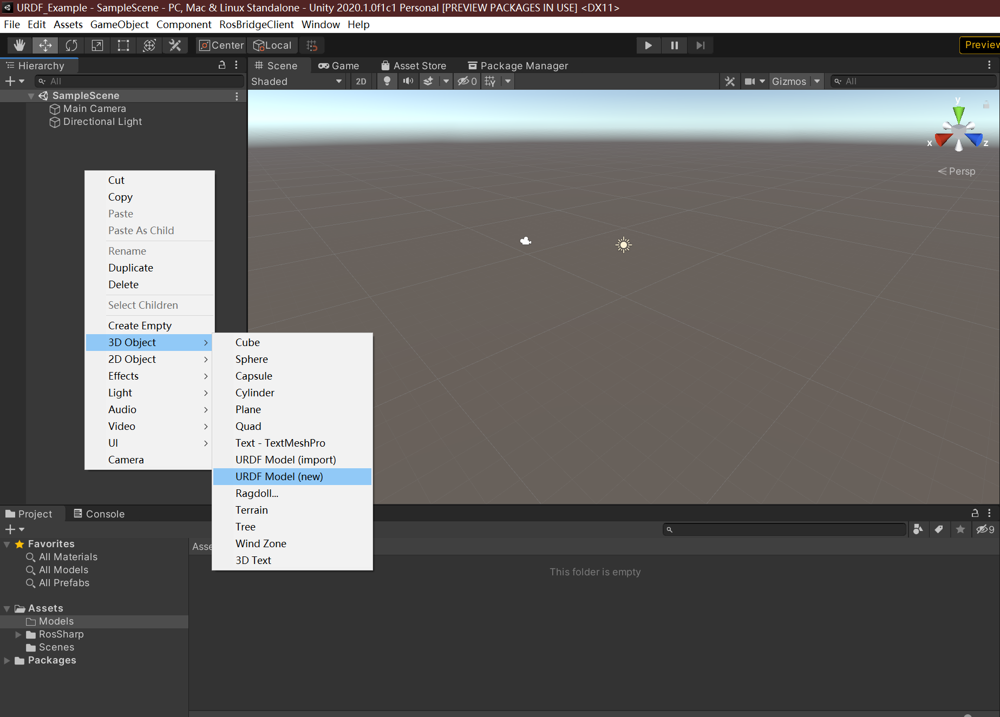
-
为base_link创建Visuals: 点击刚刚创建的URDF Object，选择base_link中的Visuals，在属性的Type of Visuals中选择mesh，点击Add visual。
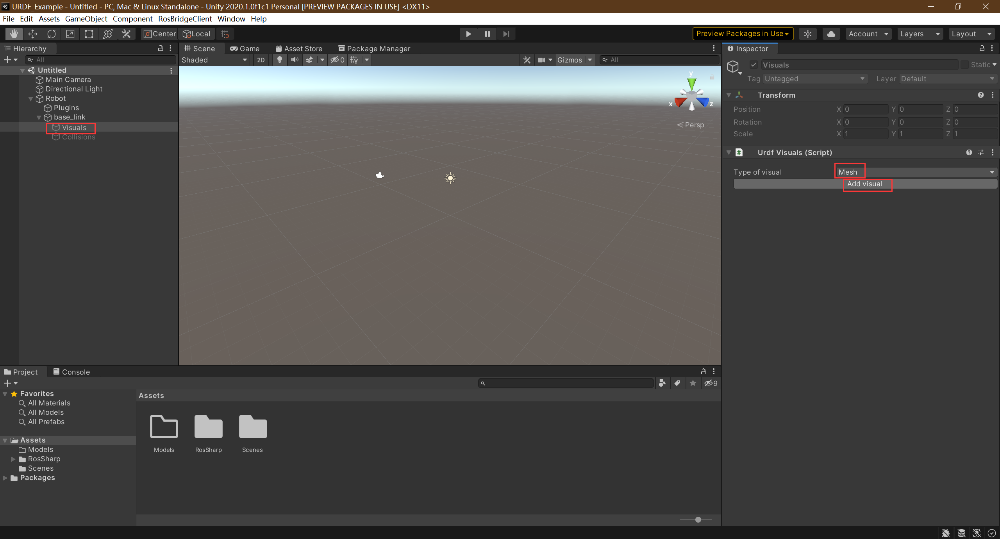
接下来在Visuals下面会创建一个名为unamed的子物体（也可以改成其他名字），将其中一个part的mesh模型(.obj)拖动到该子物体上面，如下图所示：
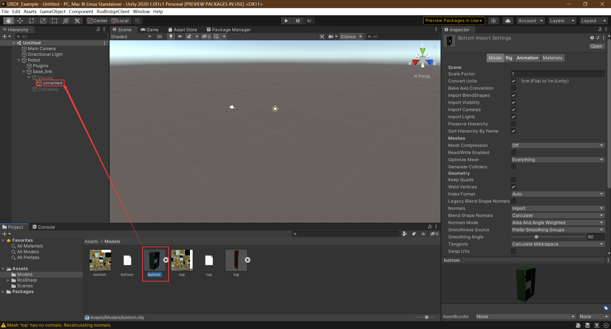
-
为base_link创建Collisions: 我们可以先把Visuals下的unamed子物体改名，并点击属性栏的Add collision to match visual来根据，如下图所示：
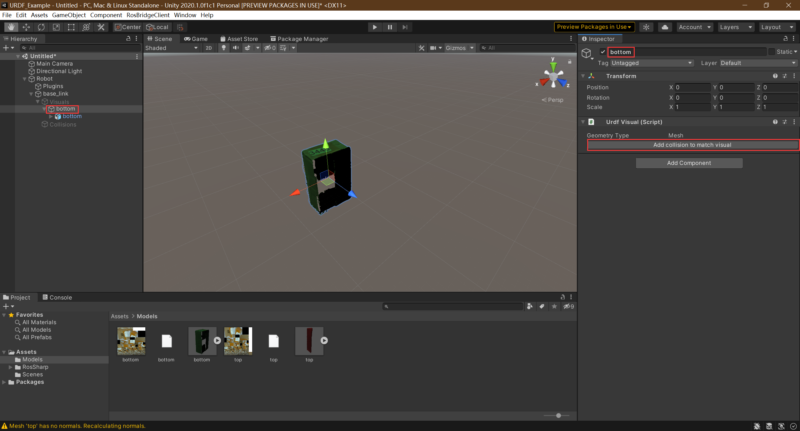
接下来我们会在Collisions下面看到一个unamed物体，点击该物体在编辑器中可以显示出来（绿色的线包裹住了物体），如下图所示：
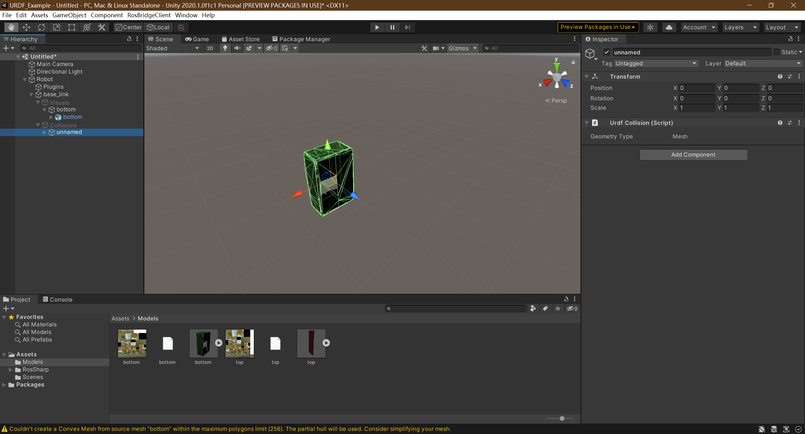
-
新建link：选中base_link，在右侧属性栏中的Child Joint Type选择Joint类型，这里我们选择Revolute(也可以根据情况选择Prismatic)，然后点击Add child link(with joint)，如下图所示：

这时我们可以看到base_link下面多了一个子link，我们可以将它改名，如下图所示：
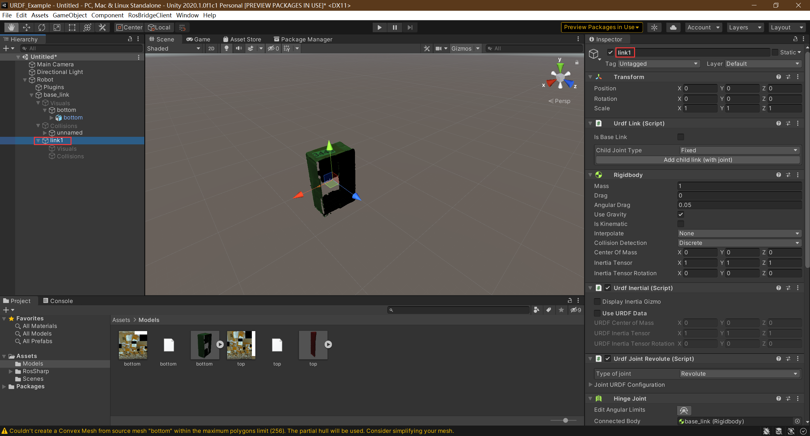
-
类似步骤3，我们为新的link创建Visuals。创建完成后的效果如下图所示：
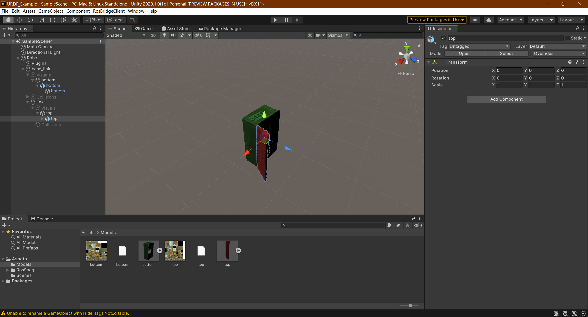
-
根据Joint信息(.txt)来修改新建的link1的坐标原点位置（原本是在base_link的原点位置），将其坐标原点设置在与base_link连接的joint的anchor point位置。同时根据Joint信息修改新建的link1的joint的Axis方向。
首先打开储存Joint信息的txt文件，如下图所示：
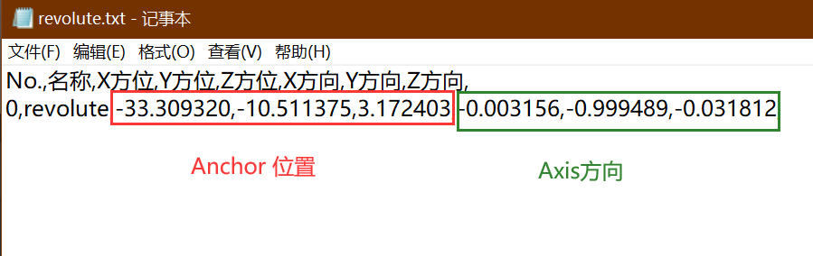
接下来根据txt中的Anchor位置修改link1的position transform，注意数值与Anchor位置的正负号是相同的！ （有的时候我们还需要手动更改某个方向的正负号，比如z轴）修改完成后，我们可以看到link1的坐标原点已经处于了joint的anchor位置上（有的时候anchor位置某个方向的正负号会出错，这时要靠肉眼去人工判断），如下图所示：

接下来我们将link1的Visuals的position transform改成与link1相反的数值。此时应当看到part的位置已经恢复正常，如下图所示：
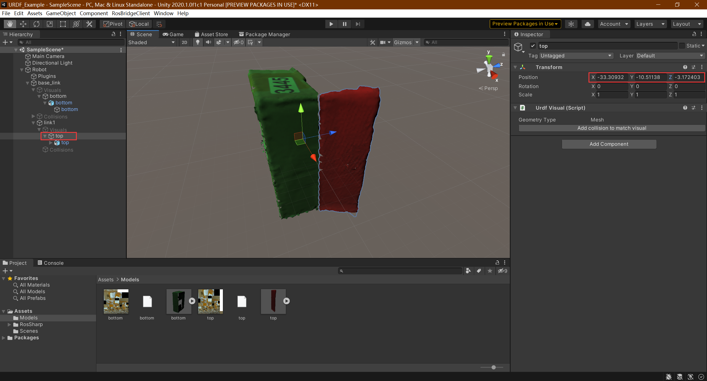
-
根据Joint信息(.txt)去修改link1的joint的axis方向，并且设置limits。（注意同一类物体的joint axis方向和joint limits要尽量保持一致！！！！）
首先选择link1，在右侧的Hinge Joint组件中设置Axis的方向（根据txt中的信息，可能需要适当修改正负号，使得joint的limits在合适的范围内）。
接下来点击Edit Angular Limits，显示joint的limits范围。在右侧的Hinge Joint Limits Manager中设置Large Angle Limit Min和Large Angle Limit Max。（也可以使用RandomJointStateWriter来直观判断）
设置完成后，我们可以在Scene中看到Joint（橘黄色的小箭头）以及Angular limits（红色的扇形）。
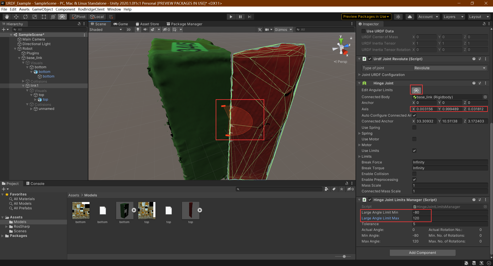
-
类似步骤4，为link1创建Collisions。创建完成之后的效果如下图所示：
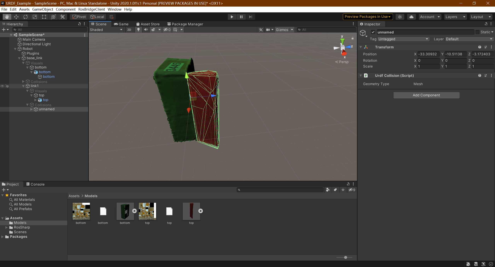
-
导出URDF模型。选中整个URDF 模型（本例为Robot），先点击右侧的Generate Unique Joint Name，然后点击Export robot to URDF file。如下图所示：
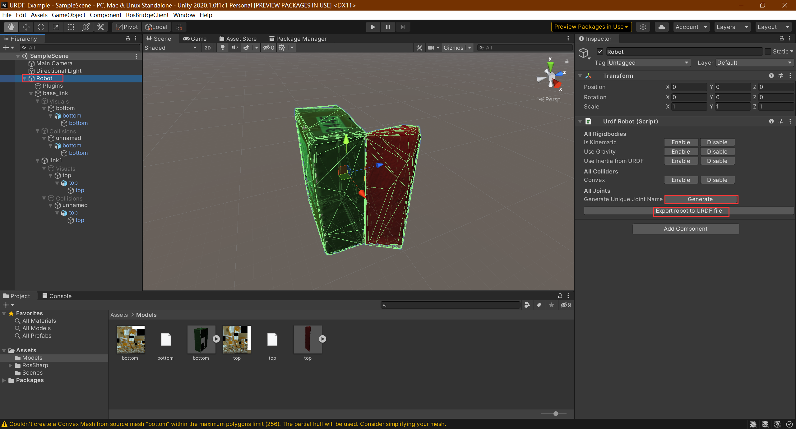
在弹出的界面中选择Export URDF to root folder，然后选择导出路径，最后点击Export，如下图所示：
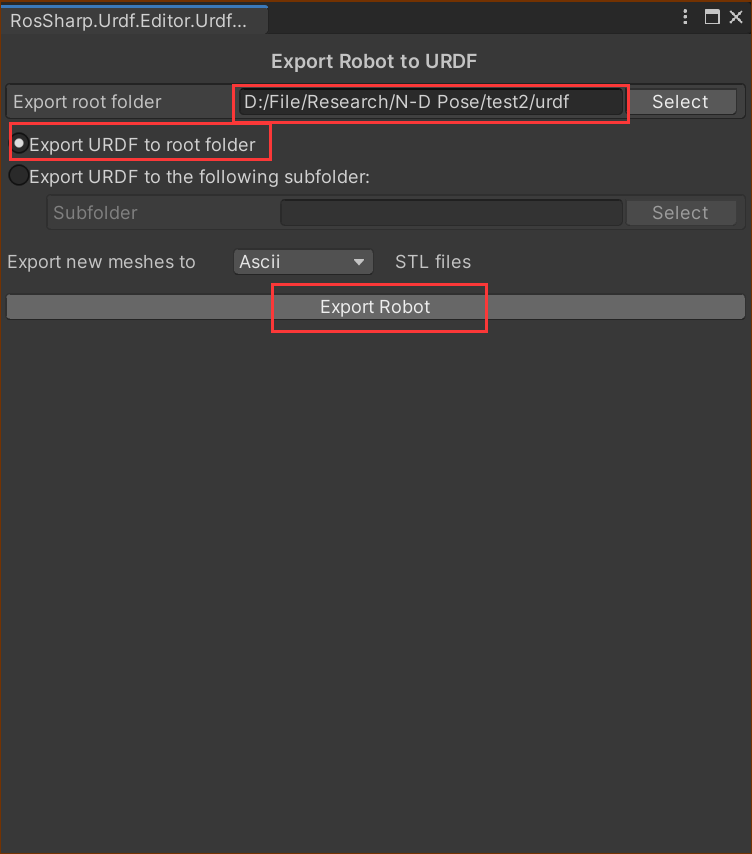
-
修改导出的URDF文件。使用VSCode等文本编辑器打开导出的urdf文件（VSCode可以装上URDF插件），如下图所示：
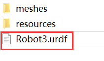
把urdf文件中所有的visual tag里面的**.stl**全部换成**.fbx**（可以使用VSCode的批量替换功能）。如下图所示：
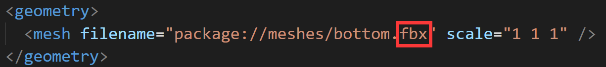
类似地，把collision tag里面的**.stl**全都换成**.obj**。
接下来把urdf文件中material相关的tag都删除掉。
然后，把该模型的mesh数据(.fbx)和纹理图片(.jpg)放进meshes文件夹内，并把resources文件夹删除。
到此为止，该物体的URDF制作完成。
导入Unity
- 导入URDF，修改每一个link的Collision，修改每一个link的Visual的layer，在关节link加入RandomJointStateWriter，然后把总体设成kinematic和not use gravity。如下图所示：